ROS
I/O Package
Getting Started Guide
R2014a
Revision History
December
2013 New
for Version 0.1.6.0 (Release 2013b)
January
2014 Updated
for Version 0.1.6.1 (Release 2013b)
March 2014 Updated
for Version 0.1.6.2 (Release 2014a)
Table
of Contents
Installation and
Configuration
Creating a Publisher
and a Subscriber
Reassigning Message
Listener Tasks of a Subscriber.
Creating a Custom
Message Listener
Setting Up Shutdown
Tasks of a Node
Introduction
Product
Description
ROS I/O Package is a MATLAB® extension that provides the capability to interact with Robot Operating System (ROS) from MATLAB. ROS is basically a set of libraries and tools that helps software developers create robot applications. Licensed under an open source, BSD license, ROS provides hardware abstraction, device drivers, libraries, visualizers, message-passing, package management, and others. For more information, see http://wiki.ros.org. Due to its flexibility, ROS is very popular among software developers in robotics. On the other hand, MATLAB and Simulink® are commonly used when it comes to prototyping algorithms and designs. The ability for MATLAB to interface with ROS is therefore very useful for users who want to verify their new algorithms prototyped in MATLAB along with existing software running on ROS. ROS I/O Package allows users to interact with robots and simulators that run on ROS from MATLAB directly without having to reimplement their publisher and/or subscriber nodes in Python®, C++, or Java®.
By extending the rosjava API, ROS I/O Package provides a set of new API for creating ROS nodes in MATLAB that operate and communicate based on ROS publisher/subscriber mechanism. ROS I/O Package has the following key features:
・ Enable creation and removal of new nodes from MATLAB.
・ Enable creation and removal of publishers from MATLAB.
・ Enable creation and removal of subscribers from MATLAB.
・ Enable creation of ROS messages in MATLAB.
・ Enable publishers to publish MATLAB data to their advertised topics.
・ Enable subscribers’ message listeners to execute arbitrary user defined MATLAB functions when applicable messages are received.
・ Enable launching of ROS masters on the local host from MATLAB if none is available for connection externally.
・ Support 32-bit and 64-bit Windows®.
・ Support 64-bit Linux®, including Ubuntu®.
・ Support 64-bit Mac OS X.
System
Requirements
・
Operating system: Windows (32-bit and 64-bit),
Linux (64-bit only), or Mac OS X (64-bit only).
・
MATLAB R2014a, R2013b, R2013a, or R2012b.
・
Access to ROS Hydro and Gazebo is recommended
for running more examples on http://www.mathworks.com/ros.
Note:
・
Even though this guide is written specifically
for MATLAB R2014a, you may use it with any of the supported releases. However, make
sure you use the installer that matches the MATLAB release when installing ROS
I/O Package.
・
While ROS I/O Package is only tested against
ROS Hydro, it is expected to work with other ROS releases as well. However,
keep in mind that incompatibilities can exist if you apply messages that have
mismatched signatures across releases.
Installation
and Configuration
Software
Installation
・
To install ROS I/O Package on MATLAB R2014a
win32, run the installer
ROSIOPackage-R2014a_v0.1.6.2_win32-Install.exe.
・
To install ROS I/O Package on MATLAB R2014a
win64, run the installer
ROSIOPackage-R2014a_v0.1.6.2_win64-Install.exe.
・
To install ROS I/O Package on MATLAB R2014a
glnxa64, run the installer
ROSIOPackage-R2014a_v0.1.6.2_glnxa64-Install.
・
To install ROS I/O Package on MATLAB R2014a
maci64, run the installer
ROSIOPackage-R2014a_v0.1.6.2_maci64-Install.
・
You will be asked to select a destination
folder for the PSP when running the installer. Select the root folder of your
MATLAB installation as the destination folder. If necessary, you can use the
MATLAB command matlabroot to
determine the root folder where MATLAB is installed.
・
 Note that if ROS I/O Package is
already installed, you must first uninstall it by running the uninstaller ROSIOPackage-R2014a_v0.1.6.2_XXXXX-Uninstall.
You can find the uninstaller at matlabroot\uninstall
(e.g., C:\Program Files\MATLAB\R2014a\uninstall).
See the uninstallation instructions below.
Note that if ROS I/O Package is
already installed, you must first uninstall it by running the uninstaller ROSIOPackage-R2014a_v0.1.6.2_XXXXX-Uninstall.
You can find the uninstaller at matlabroot\uninstall
(e.g., C:\Program Files\MATLAB\R2014a\uninstall).
See the uninstallation instructions below.
Here are
the instructions to run the installer:
1. Double-click
ROSIOPackage-R2014a_v0.1.6.2_XXXXX-Install
to launch the installer.
2. Click Yes when the Install ROS IO Package
dialog appears.
3. When the Welcome to the InstallJammer Wizard for ROS
IO Package screen appears in the ROS IO Package Setup dialog, click Next > to start the installation
process.
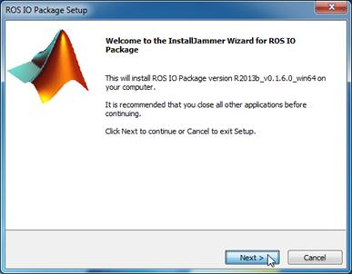
4. When the License Agreement screen appears in the ROS
IO Package Setup dialog, read and then accept the license agreement by clicking
Next >.
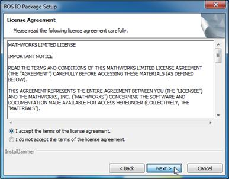
5. When the Choose Destination Location screen
appears, click Browse to select a
destination folder. This must be the root folder of your MATLAB installation.
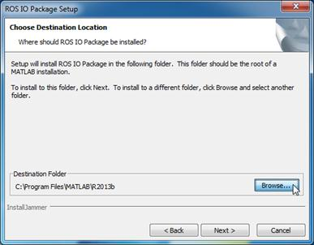
6. Click Next > after selecting a destination
folder.
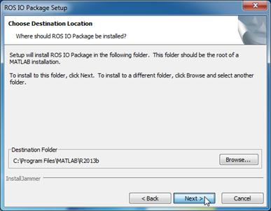
7. When the Verifying MATLAB Directory screen
appears, click Next > to start the
release verification step.
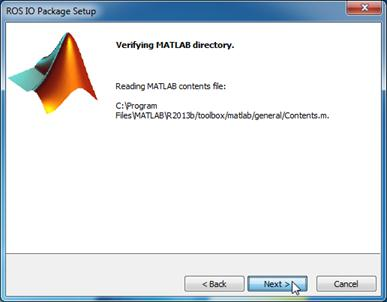
8. The
verification result is displayed in the Verifying
MATLAB Release screen. If the selected MATLAB release matches the targeted
release, click Next >. Otherwise,
you have to return to the Choose
Destination Location screen to re-select the targeted release.
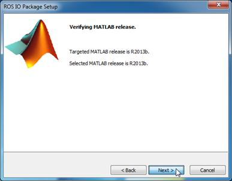
9. When the Start Copying Files screen appears, click
Next > to start file extraction.
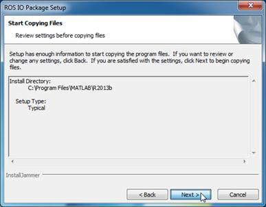
10. The Installing screen appears after all
files are successfully copied. Click Next
> to start the configuration process. The configuration process sets up
the path so that ROS I/O Package is available for use when you launch MATLAB
next time. Because this step automatically launches MATLAB to perform path
addition, it may take a few minutes before the next screen appears.
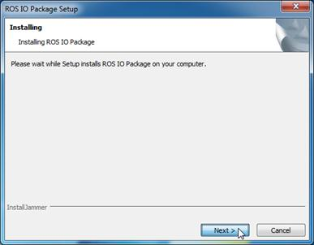
11. When the Adding ROS IO Package to the MATLAB Path
screen appears, click Next >.
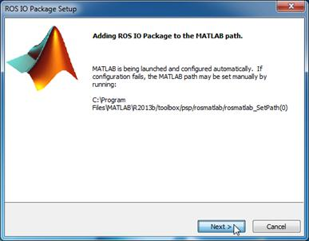
12. If the
installation is successful, you will be brought to the InstallJammer Wizard Complete screen. Click Finish to close the installer.
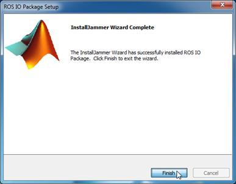
13. On
Windows, the Program Compatibility Assistant may appear after the installation.
You can simply click This program
installed correctly to dismiss the dialog.
Installed Files
and Folders
When using
ROS I/O Package, you might find it helpful to know the location of related
files and folders as explained below:
・
ROS I/O Package uses folders and files located
in matlabroot\toolbox\psp\rosmatlab.
This folder contains the new API that is made available under a package named rosmatlab.
It also contains utilities for managing all related MATLAB and Java class
paths.
・
All applicable Java archive files that are
distributed through the maven artifact repository for rosjava
dependencies and builds are placed in matlabroot\toolbox\psp\rosmatlab\jars. Note that ROS I/O Package 0.1.6.2
complements rosjava_core 0.1.6 (rosjava-0.1.6.jar).
Its compatibility with other versions of rosjava_core is unknown.
・
The folder matlabroot\toolbox\psp\rosmatlab\examples
contains files used for demonstrating the ROS I/O Package API. These examples
contain instructions for creating publisher and subscriber nodes in MATLAB.
Uninstallation
FOR WINDOWS AND LINUX USERS:
An
uninstaller named ROSIOPackage-R2014a_v0.1.6.2_XXXXXUniInstall
is automatically created and placed in matlabroot\uninstall
upon a successful installation. Here are the instructions to remove ROS I/O
Package from MATLAB using the uninstaller:
1. Double-click
ROSIOPackage-R2014a_v0.1.6.2_XXXXX-Uninstall
to launch the uninstaller.
2. Click Yes when the Uninstall ROS IO Package
dialog appears.
3. When the Removing ROS IO Package from the MATLAB Path
screen appears in the ROS IO Package Setup dialog, click Next > to start the uninstallation process.
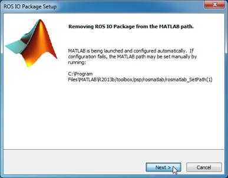
4.
If the uninstallation is successful, you will
be brought to the Uninstall Complete
screen. Click Finish to close the
uninstaller.
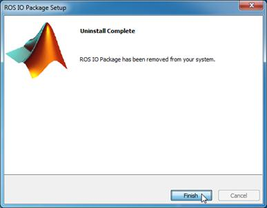
5. On
Windows, the Program Compatibility Assistant may appear after the uninstallation.
You can simply click This program
installed correctly to dismiss the dialog.
FOR MAC USERS:
There is
no uninstaller available for Mac. Use the following instructions to remove ROS
I/O Package from MATLAB:
1. In MATLAB,
run rosmatlab_SetPath(1) to revert
changes to the Java class path and remove ROS I/O Package from the MATLAB path.
2. Exit
MATLAB.
3. You can now
safely delete all contents in matlabroot\toolbox\psp\rosmatlab.
Updating rosjava
Distribution
You can update
or add new JAR files under the rosjava distribution if necessary. To do this,
1. Download
the applicable JAR files from the maven artifact repository for rosjava
dependencies and builds.
2. Copy the
downloaded JAR files to matlabroot\toolbox\psp\rosmatlab\jars.
3. Remove JAR
files that you want to replace from matlabroot\toolbox\psp\rosmatlab\jars.
4. Run the
utility rosmatlab_AddClassPath to update
the Java class path.
5. Restart
MATLAB in order for the changes to take effect.
Keep in
mind that when you replace existing JAR files in ROS I/O Package, the risk of
incompatibility exists.
Importing Custom
Messages
If you have
custom messages that are generated using rosjava based on the instructions
given at http://wiki.ros.org/rosjava/Tutorials/hydro/Unofficial%20Messages, you can
import them for use with ROS I/O Package. To do this,
1. Copy the
rosjava generated JAR files to matlabroot\toolbox\psp\rosmatlab\jars.
2. Run the
utility rosmatlab_AddClassPath to update
the Java class path.
3. Restart
MATLAB in order for the changes to take effect.
Tutorials
Creating a
Publisher and a Subscriber
|
Note: Commands
used in the following example can be found in matlabroot\toolbox\psp\ |
The following example explains the basic
instructions for creating publishers and subscribers. In the example, we create
a node with a publisher and a subscriber that exchange std_msgs/String messages.
Every
ROS node must connect to a master. Assuming that there is no external master
available for connection, we have to first launch a master on the local host
before proceeding with creating a new node. Use the following command to launch
a ROS master on port 11311 on the
local host:
|
roscore =
rosmatlab.roscore(11311); |
To
see the URI of the master, enter roscore.RosMasterUri.
An attempt to launch another master on the same port will result in an error.
Note that you must assign the returned object to a handle variable in order to
keep it in memory. Otherwise, the object is automatically assigned to ans, and the object will be destroyed if
ans is reassigned.
With
a master available for connection, we are now ready to create a new node. Use
the following command to create a new node named /NODE and connect it to the master we just launched:
|
node = rosmatlab.node('NODE', roscore.RosMasterUri); |
To
see the URI of the node, enter node.Node.getUri().
Notice that the IP address of the local host has been used to construct the
URI. Also, notice that both node.Publishers
and node.Subscribers are empty in the
new node.
Next,
we will create a publisher and a subscriber that exchange messages of type std_msgs/String via a topic named /TOPIC. First, use the following command
to add a publisher to the new node:
|
publisher = rosmatlab.publisher('TOPIC', 'std_msgs/String',
node); |
Then,
use the following command to add a subscriber to the new node:
|
subscriber = rosmatlab.subscriber('TOPIC', 'std_msgs/String',
1, node); |
Notice
how the above command sets the buffer limit of the subscriber to 1. Given the queue size of one, if the message listener
processes new messages slower than they are received, the
existing message that is yet to be processed will be removed from the buffer if
a new message is received. If a subscriber is expecting messages that are
published repeatedly, we recommend setting the buffer limit to at least a
quarter of the highest frequency at which messages are received. Such a setting
minimizes chances of experiencing dropped messages. For example, to receive
messages at 100 Hz, consider using a
buffer limit of 25. Note that this
setting is particularly crucial if you are running on Windows.
In
order for the subscriber to be useful, we need to bind at least one function to
its standard message listener. This function executes when a valid message is
published to the subscribed topic. It serves the purpose of carrying out
message-driven tasks. Use the following command to set execution of a pair of
functions named function1 and function2 whenever a valid message is published
to /TOPIC:
|
subscriber.setOnNewMessageListeners({@function1,
@function2}); |
The
definitions of both function1 and function2 are given in the code snippet
below:
|
function function1(message)
disp(char(message.getData())); end function function2(message) disp(sprintf('Message received: %s',datestr(now))); end |
Note
that each function expects the received message as its sole argument. Also,
notice how function1 reads the data field of the std_msgs/String message using the getData method of the message object.
Now,
let us create a new message for use by the publisher. Use the following command
to first create a std_msgs/String
message:
|
msg = rosmatlab.message('std_msgs/String', node); |
Then
use the following command to set the data
field of the std_msgs/String message:
|
msg.setData(sprintf('Message created: %s', datestr(now))); |
Notice
how the above command writes the data
field of the std_msgs/String message
using the setData method of the
message object.
Once
a message is populated with useful data, it is ready to be published. Use the
following command to publish the message we just constructed:
|
publisher.publish(msg); |
You
should see outputs similar to the following depending on the current date and
time:
|
Message
created: dd-mmm-yyyy HH:MM:SS Message received: dd-mmm-yyyy HH:MM:SS |
Reassigning
Message Listener Tasks of a Subscriber
|
Note: Commands
used in the following example can be found in matlabroot\toolbox\psp\ |
The
following example explains the basic instructions for reassigning and
withdrawing the functions that you want execute when a valid message is
published to the subscribed topic.
You
can reassign tasks carried out by the standard message listener by simply
binding a new set of functions using the setOnNewMessageListener
method of the subscriber. The following command replaces function1 and function2 that
were previously set with function3.
|
subscriber.setOnNewMessageListeners({@function3}); |
The
definition of function3, which
basically combines the tasks performed by both function 1 and function2
into a single function, is given in the code snippet below:
|
function function3(message)
disp([char(message.getData()), sprintf('\n Message received: %s', datestr(now))]); end |
To
test the new binding, use the following commands to update and publish the
message iteratively:
|
for i = 1:10 msg.setData(sprintf('Iteration %d:\n
Message created: %s', i, datestr(now))); publisher.publish(msg); pause(1); end |
You
can suspend the subscriber without removing it from the node by unbinding all
functions from the standard message listener. To do that, use the following
command:
|
subscriber.setOnNewMessageListeners([]); |
Without
any binding, using the following commands to update and publish the message
produces no effect:
|
msg.setData(sprintf('Message created: %s', datestr(now))); publisher.publish(msg); |
If you want to remove a publisher or a subscriber from a node, you
must use the removePublisher or removeSubscriber method of the node,
respectively. Use the following command to remove the subscriber we previously
created from the node:
|
node.removeSubscriber(subscriber); |
Verify that node.Subscribers is now empty. Notice that the variable subscriber in the workspace has been automatically deleted when you
remove the subscriber from the node. Likewise, if you remove the publisher we
previously created from the node, the variable publisher in the workspace will be automatically deleted as well.
Finally, to clean up, use the following command to delete the
variable roscore:
|
clear('roscore'); |
This command triggers a call to the destructor of the rosmatlab.roscore object. The destructor
first shuts down the master, and then destroys the object. In the process of
doing so, the destructor searches for rosmatlab.node
objects that are connected to the master for deletion. Notice that the above
command not only deletes the variable roscore
in the workspace, it also deletes the variables node, publisher, and subscriber if they still exist in the
workspace.
Creating a
Custom Message Listener
|
Note: Commands
used in the following example can be found in matlabroot\toolbox\psp\ |
The
following example demonstrates the use of alternative API for creating
publishers, subscribers, and messages. It also explains how you can add a
custom message listener to carry out user defined tasks when a valid message is
published to the subscribed topic. This is useful when the function that
performs the tasks expects arguments other than the message itself. In the
example, we create a node with a publisher and a subscriber that exchange geometry_msgs/Point messages.
Similar
to the previous example, we must first launch a master on the local host before
proceeding with creating a new node. Use the following command to launch a ROS
master on the local host.
|
roscore = rosmatlab.roscore(); |
Enter
roscore.RosMasterUri to return the
URI of the master. Notice that the master is launched on port 11311 by default since the port argument is omitted.
Next,
we proceed with creating a new node. Use the following command to create a new
node named /NODE and connect it to
the master we just launched:
|
node = rosmatlab.node('NODE', [], [], 'rosIP', '127.0.0.1'); |
Enter
node.Node.getUri() to return the URI
of the node. Notice that the above command uses the loopback interface to
construct the node’s URI instead of using the host’s IP address. Also, notice
that both host and port arguments are omitted in the
command. This assumes the master is running on port 11311 on localhost.
With
a new node, we can now create a publisher and a subscriber that exchange
messages of type geometry_msgs/Point
via a topic named /POINT. Use the
following commands to first add a publisher, and then a subscriber to the new
node:
|
publisher = node.addPublisher('POINT', 'geometry_msgs/Point'); subscriber = node.addSubscriber('POINT', 'geometry_msgs/Point', 10); |
Notice
how the above command sets the buffer limit of the subscriber to 10. If the message listener
processes new messages slower than they are received, existing
messages that are yet to be processed will be removed from the buffer when more
than 10 new messages are queued.
Instead
of binding a function to the subscriber’s standard message listener, let us add
a custom message listener to implement user defined tasks that execute when a
valid message is published to the subscribed topic. Use the following command
to add a custom message listener and set execution of a function named custom_function whenever a valid message
is published to /POINT:
|
subscriber.addCustomMessageListener({@custom_function,
node.Node}); |
Notice
how custom_function is set with a supplementary
argument node.Node in the above
command. We need to inspect the definition of custom_function in order to explain the syntax.
The
definition of custom_function is
given in the code snippet below:
|
function custom_function(handle, event,
node) message =
event.JavaEvent.getSource; magnitude =
norm([message.getX(), message.getY(), message.getZ()]); point = ['[', num2str(message.getX()), ',', num2str(message.getY()), ',', ... node.getLog().info(['Distance of ', point, ' from the origin is ', num2str(magnitude), '.']); end |
Note
that the function expects a node
object as a supplementary argument in addition to the standard arguments handle and event. Also, notice how custom_function
extracts the received message from the event
argument.
Now,
let us create a new message for use by the publisher. Use the following command
to first create a geometry_msgs/Point
message:
|
msg = node.newMessage('geometry_msgs/Point'); |
Then
use the following command to set the x,
y, and z fields of the geometry_msgs/Point
message for publishing iteratively.
|
for i = 1:10 msg.setX(rand(1)) msg.setY(rand(1)) msg.setZ(rand(1)) publisher.publish(msg); pause(0.1); end |
Setting Up
Shutdown Tasks of a Node
|
Note: Commands
used in the following example can be found in matlabroot\toolbox\psp\ |
Every node has a default node listener. You
can bind user defined functions to a node’s default listener to perform clean
up tasks when the node shuts down. Use the following command to set execution
of a function named preShutdownTask when the node has started to shut
down:
|
node.setOnShutdownListener(@preShutdownTask); |
Likewise, use the following command to set execution
of a function named postShutdownTask when the node has shut down:
|
node.setOnShutdownCompleteListener(@postShutdownTask); |
The
definitions of both preShutdownTask and postShutdownTask are given in the
code snippet below:
|
function preShutdownTask(handle, event) node =
event.JavaEvent.getSource; disp(['Node ', char(node.getName()), ' running on ', char(node.getUri()), ... end function postShutdownTask(handle, event) node =
event.JavaEvent.getSource; disp(['Node ',
char(node.getName()), ' running on ', char(node.getUri()), ... end |
To verify that the binding of preShutdownTask and postShutdownTask
with the default node listener
performs correctly, use the following command to shut down the node:
|
node.Node.shutdown(); |
You should see outputs similar to the following
depending on the port where the node runs:
|
Node /NODE running on http://127.0.0.1:XXXXX/ is shutting down. Node /NODE running on
http://127.0.0.1:XXXXX/ has shut down. |
Finally, to completely destroy the node, use the following command
to delete the variable node:
|
clear('node'); |
This command triggers a call to the destructor of the rosmatlab.node object. The destructor
first shuts down the node, and then destroys the object. In the process of
doing so, the destructor searches for rosmatlab.publisher
and rosmatlab.subscriber objects that
are attached to the node for deletion. Notice that the above command not only
deletes the variable node in the
workspace, it also deletes the variables publisher
and subscriber if they still exist in
the workspace.
Class
Reference
ROS I/O
Package contains the following classes for constructing ROS masters, nodes,
publishers, subscribers, and messages:
・
rosmatlab.roscore
・
rosmatlab.node
・
rosmatlab.publisher
・
rosmatlab.subscriber
・
rosmatlab.message
Note that these classes are defined under a package named rosmatlab.
rosmatlab.roscore
|
Property Summary |
|
|
RosMaster |
Master
as returned by rosjava. |
|
RosMasterUri |
URI where
the master is running on. |
|
Constructor Summary |
|
Syntax: roscore
= rosmatlab.roscore(port) Description: Launch a ROS Master on the specified port on the local host. This
constructor automatically starts the master once it is instantiated. The
input argument port must be a double. If port is omitted, 11311
is the default. Example: roscore = rosmatlab.roscore(11311) roscore = rosmatlab.roscore() |
|
Method Summary |
|
Syntax: roscore.start () Description: Start the master. Because the constructor automatically
starts the master, use this method only if you want to restart the master after
it has been shut down by the roscore.shutdown
() method. Example: roscore.start() |
|
Syntax: roscore.shutdown () Description: Shut down the master. Use this method only
if you want to shut down the master without destroying it. Example: roscore.shutdown () |
|
Syntax: roscore.delete() Description: Destructor. Note that this method
automatically deletes all rosmatlab.node
objects that run on the master in the caller workspace. This method is
automatically called when all references to the object are deleted. Example: roscore.delete() |
rosmatlab.node
|
Property Summary |
|
|
Node |
Default
node as returned by rosjava. |
|
NodeName |
Name of
the node. |
|
OnShutdownListener |
Listener binding the MATLAB function that executes
when the node has started to shut down. |
|
OnShutdownCompleteListener |
Listener binding the MATLAB function that
executes when the node has shut down. |
|
Publishers |
Publishers
that are attached to the node. |
|
Subscribers |
Subscribers
that are attached to the node. |
|
Constructor Summary |
|
Syntax: node
= rosmatlab.node(name, host, port) Description: Launch a node with the specified name on the master that is running on
http://host:port. The input arguments name
and host must each be a char array. The input argument port must be a double. Note that host
must be either the name or IP address of the host where the master you want
to connect to is running on. If host
is omitted, localhost is the
default. If port is omitted, 11311 is the default. Every ROS node is
assigned with a URI. This URI is not the same as the URI of its master. The URI
of a new node is always constructed using one of the following in the order
of precedence: ・
Environment
variable ROS_HOSTNAME ・
Environment
variable ROS_IP ・
IP address
of the local host Example: node
= rosmatlab.node('NODE', '123.33.22.234', 11311) node
= rosmatlab.node('NODE', 'HOSTNAME', 11311) node
= rosmatlab.node('NODE', 'HOSTNAME', []) node
= rosmatlab.node('NODE', [], 11311) node
= rosmatlab.node('NODE') |
|
Syntax: node
= rosmatlab.node(name, uri) Description: Launch a node with the specified name on the master that is running on uri. The input arguments name and uri must each be a char
array (string). Note that uri must
be the URI of the host where the master you want to connect to is running on.
If uri is omitted, the environment
variable ROS_MASTER_URI is used if
it exists. Otherwise, http://localhost:11311
is the default. Every ROS node is assigned with a URI. This URI is not the
same as the URI of its master. The URI of a new node is always constructed
using one of the following in the order of precedence: ・
Environment
variable ROS_HOSTNAME ・
Environment
variable ROS_IP ・
IP address
of the local host Example: node
= rosmatlab.node('NODE', 'http://123.33.22.234:11311') node
= rosmatlab.node('NODE', 'http://HOSTNAME:11311') node
= rosmatlab.node('NODE', 'http://localhost:11311') |
|
Syntax: node
= rosmatlab.node(name, host, port,
option, value) Description: Launch a node with the specified name on the master that is running on
http://host:port with any combination of the following options: ・
safeMode - Use this
option to enable parsing of connection errors to the master. Its value must
be either true or false. The option is useful when the
status of the master is not known. Note that this option incurs a delay of at
least 20 seconds in order to detect the connection status. Without the
option, you may experience error information that is logged to the MATLAB
command window after every unsuccessful attempt to connect to the master. ・
onShutdown - Use
this option to bind a user defined function that executes when the node has
started to shut down. Its value must be a handle to a function with a
signature of functionName(handle,
event). This option is useful for executing tasks upon a call to node.Node.shutdown(). ・
onShutdownComplete - Use
this option to attach a user defined function that executes when the node has
shut down. Its value must be a handle to a function with a signature of functionName(handle, event). This
option is useful for executing tasks upon a return of node.Node.shutdown(). ・
rosIP - Use
this option to overwrite the IP address that is automatically determined for
the local host. Its value must be a string in dotted decimal notation. When a
node is created, the IP address for the local host is used to construct its
URI for robustness reason. This option is useful for specifying the correct
IP address when the local host is assigned with multiple IP addresses. You
can also use this option to apply the loopback interface (127.0.0.1) for
better performance if the node only communicates with other nodes on the
local host. Every ROS node is assigned with a URI. This
URI is not the same as the URI of its master. The URI of a new node is always
constructed using one of the following in the order of precedence: ・
Value of
the rosIP option ・
Environment
variable ROS_HOSTNAME ・
Environment
variable ROS_IP ・
IP address
of the local host Example: The following command creates a node that connects
to a master running on http://HOSTNAME:11311 with the safeMode option enabled: node
= rosmatlab.node('NODE', 'HOSTNAME', 11311,'safeMode', true) The following command creates a node that connects
to a master running on http://HOSTNAME:11311 using the loopback interface: node
= rosmatlab.node('NODE', 'HOSTNAME', 11311, 'rosIP', '127.0.0.1') The following command creates a node that connects
to a master running on http://localhost:11311 with a setup to execute preShutdown and postShutdown functions when the node is shut down: node
= rosmatlab.node('NODE', [], [], 'onShutdown', @preShutdown, ... |
|
Method Summary |
|
Syntax: publisher
= node.addPublisher(topic, type) Description: Create a new publisher of the specified topic and attach it to the node for
sending messages of the given type.
The input arguments topic and type must each be a char array. Note that type must be the name of a valid
message type that implements org.ros.internal.message.Message.
You can also use the constructor of rosmatlab.publisher
to create a publisher as an alternative. See the documentation of rosmatlab.publisher for details on
publishing messages. Example: publisher = node.addPublisher('/TOPIC',
'std_msgs/String') |
|
Syntax: subscriber
= node.addSubscriber(topic, type, limit) Description: Create a new subscriber to the specified topic and attach it to the node for
receiving messages of the given type;
with a buffer that can queue new
messages up to the specified limit.
The input arguments topic and
type must each be a char array. The input argument limit must be a double. Note that type
must be the name of a valid message type that implements org.ros.internal.message.Message. If a message listener of the subscriber
processes new messages slower than they are received, older messages in the
queue are removed from the buffer when the buffer limit is exceeded. If the
subscriber is expecting messages that are published repeatedly at high
frequencies, increase the buffer limit to minimize chances of experiencing
dropped messages. You can also use the constructor of rosmatlab.subscriber to create a subscriber as an alternative.
See the documentation of rosmatlab.subscriber
for details on receiving messages. Example: subscriber = node.addSubscriber('/TOPIC',
'std_msgs/String', 1) |
|
Syntax: node.newMessage(type) Description: Create a new message of the given type. The input argument type must be a char array. Note that type
must be the name of a valid message type that implements org.ros.internal.message.Message. You can also use the
constructor of rosmatlab.message to
create a message as an alternative. Example: message =
node.newMessage('std_msgs/String') |
|
Syntax: node.removePublisher(publisher) Description: Remove the given publisher from the node. The input argument publisher must be a rosmatlab.publisher
object that is attached to the node. Note that this method automatically
deletes the corresponding rosmatlab.publisher
object in the caller workspace. Example: node.removePublisher(publisher) |
|
Syntax: node.removeSubscriber(subscriber) Description: Remove the given subscriber from the node. The input argument subscriber must be a rosmatlab.subscriber
object that is attached to the node. Note that this method automatically
deletes the corresponding rosmatlab.subscriber
object in the caller workspace. Example: node.removeSubscriber(subscriber) |
|
Syntax: node.setOnShutdownListener(function) Description: Set the given function to carry out user defined tasks when the node has
started to shut down. The input argument function
must be a handle to a function with a signature of functionName(handle, event). Note that this method is used for
binding a user defined function that executes at the start of the shutdown
process. Example: node.setOnShutdownListener(@preShutdown) |
|
Syntax: node.setOnShutdownCompleteListener(function) Description: Set the given function to carry out user defined tasks when the node has shut
down. The input argument function must
be a handle to a function with a signature of functionName(handle, event). Note that this method is used for
binding a user defined function that executes at the end of the shutdown
process. Example: node.setOnShutdownCompleteListener(@postShutdown) |
|
Syntax: node.delete () Description: Destructor. Note that this method
automatically deletes all rosmatlab.publisher
and rosmatlab.subscriber objects
that are attached to the node in the caller workspace. This method is
automatically called when all references to the object are deleted. Example: node.delete() |
rosmatlab.publisher
|
Property Summary |
|
|
Publisher |
Default
publisher as returned by rosjava. |
|
TopicMessageType |
Type of
message to be sent to the advertised topic. |
|
TopicName |
Name of
the advertised topic. |
|
Constructor Summary |
|
Syntax: publisher
= rosmatlab.publisher(topic, type, node) Description: Create a new publisher of the specified topic and attach it to node for sending messages of the given
type. The input arguments topic and type must each be a char
array. The input argument node must
be a rosmatlab.node object. Note
that type must be the name of a valid
message type that implements org.ros.internal.message.Message.
You can also use the addPublisher
method of rosmatlab.node to create
a publisher as an alternative. Example: publisher
= rosmatlab.publisher ('/TOPIC', 'std_msgs/String', node) |
|
Method Summary |
|
Syntax: publisher.publish(message) Description: Publish the given message to the advertised topic. The input argument message must be a message object that
implements org.ros.internal.message.Message.
Note that the type of message must
match the expected topic message type. Example: publisher.publish(message) |
|
Syntax: publisher.delete () Description: Destructor. This method is automatically
called when all references to the object are deleted. Example: publisher.delete() |
rosmatlab.subscriber
|
Property Summary |
|
|
Subscriber |
Default
subscriber as returned by rosjava. (org.ros.internal.node.topic.DefaultSubscriber) |
|
BufferLimit |
The
maximum number of messages to queue. |
|
TopicMessageType |
Type of
message to be received from the subscribed topic. |
|
TopicName |
Name of
the subscribed topic. |
|
OnNewMessageListeners |
Listeners
binding the MATLAB functions that execute when messages are received via the
subscribed topics. |
|
Constructor Summary |
|
Syntax: subscriber
= rosmatlab.subscriber(topic, type, limit, node) Description: Create a new subscriber to the specified topic and attach it to node for receiving messages of the given
type, with a buffer that can queue new messages up to
the specified limit. The
input arguments topic and type must each be a char array. The input argument limit must be a double. The input argument node
must be a rosmatlab.node object. Note
that type must be the name of a valid
message type that implements org.ros.internal.message.Message.
If a Example: subscriber = rosmatlab.subscriber
('/TOPIC', 'std_msgs/String', 1, node) |
|
Method Summary |
|
Syntax: subscriber.addCustomMessageListener(function) Description: Set the given function that operates on an arbitrary number of arguments to
carry out user defined tasks when a valid message is published to the
subscribed topic. The input argument function
must be a cell array in which the
first entry is a function handle while the remaining entries are additional function
arguments. Note that the function that is associated with this handle must
have a signature of functionName(handle,
event, arguments). Example: subscriber.addCustomMessageListener({@custom_function,
extra_argument}) |
|
Syntax: subscriber.setOnNewMessageListeners(functions) Description: Set the given functions that operate on a received message to carry out user
defined tasks when a valid message is published to the subscribed topic. The
input argument functions must be a cell array of function handles. Note
that each function that is associated with these handles must have a
signature of functionName(message). Example: subscriber.setOnNewMessageListeners({@function1,
@ function2}) |
|
Syntax: subscriber.delete () Description: Destructor. This method is automatically
called when all references to the object are deleted. Example: subscriber.delete() |
rosmatlab.message
|
Constructor Summary |
|
Syntax: rosmatlab.message(type, node) Description: Create a new message of the given type using a message factory of node. The input argument type must be a char array. The input argument node must be a rosmatlab.node
object. Note that type must be the
name of a valid message type that implements org.ros.internal.message.Message. You can also use the newMessage method of rosmatlab.node to create a message as
an alternative. Example: message = rosmatlab.message('std_msgs/String',
node) Remarks: In order
to use a specific type of message, you must have exposure to its message
definition. This information is available by inspecting either the msg file or
documentation of the message. You can use http://wiki.ros.org to lookup
documentation for standard ROS messages. For example, documentation for the std_msgs package can be found at http://wiki.ros.org/std_msgs. Note
that rosjava automatically generates a pair of get and set methods for
every field in each message definition. For example, std_msgs/String contains a field named data. Upon creating a message object of type std_msgs/String, you can read and write its data field using its getData
and setData methods, respectively. |
Useful
Links
・
http://wiki.ros.org is the wiki
page for ROS documentation. Use this site to access installation and user
instructions for ROS.
・
http://wiki.ros.org/rosjava is the
wiki page for rosjava documentation. Use this site to access installation and
user instructions for rosjava.
・
http://rosjava.github.io/rosjava_core/hydro/index.html is the link
to the documentation for rosjava_core.
・
http://rosjava.github.io/rosjava_core/hydro/javadoc/index.html is the link
to the generated API documentation for rosjava_core. Use this site to access the
summary of each class/interface in every package under rosjava_core.
・
https://github.com/rosjava/rosjava_mvn_repo is the maven
artifact repository for rosjava dependencies and builds. Use this site to
download the latest rosjava distribution.
・
http://wiki.ros.org/turtlebot_simulator?distro=hydro is the
wiki page for the Turtlebot Simulator. Use this site to access installation and
user instructions for the turtlebot_simulator
package.